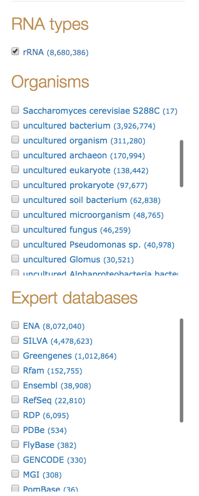

RNAcentral sequence search
Plan:
- Issues with current RNAcentral sequence search
- RNAcentral sequence search architecture
- DevOps technologies and methodologies: OpenStack, Terraform, Ansible, Jenkins
RNAcentral sequence search
Powered by NHMMER, runs as a backend job on a single EBI VM.

Why RNAcentral sequence search needs improvement?
- Current search can be slow
- Searches for rRNA are almost guaranteed to fail
- We want a better user interface
- We want to provide a search API for miRBase and other consortium member databases
Current search can be slow

Current search can be slow
- 75% of searches finish in ~1 min
- 85% of searches finish in <2 min
- The remaining searches can take up to an hour
- ~4% of searches are terminated after an hour
Special case: rRNAs
- 8.7 million / 14.5 million sequences in RNAcentral are rRNAs
- 8 million rRNAs in ENA, 4.5 million rRNAs in SILVA, 1 million rRNAs in Greengenes - sequence similarity is too high for NHMMER to discrimiate
- A query against a reduced set of 782,392 rRNAs finishes in 2h 40min with 725,365 hits (92% of total), 5.7 GB output file
rRNAs handling:

- Reduced set
- Blacklist
- Whitelist
Collaboration with miRBase

Sequence search as a service for RNAcentral databases

Search RNAcentral: Swagger API

Sequence search results facets

Demo
Architecture

- user sends search request
- producer finds a free consumer and schedules database-specific job chunk to it
- consumers return result to producer
- producer saves result to a database
- producer sends additional query to EBI text search
- EBI text search augments sequence search results with text search facets
- producer returns response
Technology stack
- DevOps: OpenStack Embassy Cloud, Jenkins, Terraform, Ansible, Docker-compose
- Backend: aiohttp, postgres, sqlalchemy, swagger
- Frontend: react, webpack, npm scripts, EBI pattern library, Zurb Foundation
- Bioinformatics: nhmmer
Devops: OpenStack cloud

DevOps: Infrastructure as Code (IaC) and Immutable Server
- Hey, Blake, did you update node.js on OY machine?
- Let me check... No, I think, I didn't.
- Anton, did you update node.js on OY machine?
- Not sure, I did something, but I think, not.
Look into Confluence page.
- Hmm... Ah, nevermind, I updated it
myself for SAB 3 moths ago...
Methodologies
- Infrastructure as Code (IaC): You don't document your infrastructure. You program your infrastructure and store it in your repository as code.
- Immutable Server: You don't touch servers with your dirty hands (unless for debugging purposes), you might not even have access to them. Want to modify anything - just edit your IaC and rebuild everything.
Technologies
- Jenkins - parametrized CD pipelines

Technologies
- Hashicorp Terraform - cross-cloud solution for managing Infrastructure as Code
Terraform example
resource "openstack_compute_instance_v2" "producer" {
depends_on = ["openstack_compute_keypair_v2.sequence_search"]
name = "producer"
image_name = "${var.image}"
flavor_name = "${var.flavor}"
key_pair = "${openstack_compute_keypair_v2.sequence_search.name}"
security_groups = [ "${openstack_compute_secgroup_v2.sequence_search.name}" ]
network {
uuid = "${openstack_networking_network_v2.sequence_search.id}"
fixed_ip_v4 = "192.168.0.5"
}
}$ terraform apply$ terraform destroyTechnologies
- Ansible - software installation automation solution
Ansible basics
- Role - reusable pieces of configuration (e.g. Postgres database role)
- Task - atomic element of a role
- Inventory - set of hosts to run a role against
- Playbook - set of roles with specific values of variables
Background worker solution:
Which technologies to use?
Don't try these at home, kids:
- Kafka + Zookeeper / Kafka Stream
- Akka / Akka Streams
Don't waste time on these technologies, they are good for corporate finance, but not cost-efficient in EBI environment.
Possibly viable worker solutions:
- Celery/RabbitMQ
- Hadoop/Spark
We're using
aiohttp - new python3 asynchronous framework, built on top of asyncio

Conclusions
- The new sequence search is coming Q1 2019
- The new cloud toolchain is nice